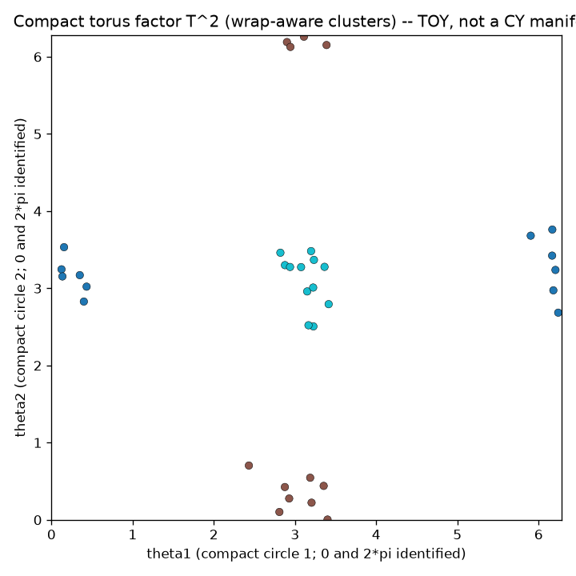

Calabi–Yau Compactification, in a Latent Space
A latent space with large extended dimensions and compactified periodic ones — a toy Calabi–Yau compactification where the toroidal geometry makes a measurable difference to clustering.

The idea
String theory compactifies extra dimensions on a Calabi–Yau manifold — a compact complex manifold with special geometric properties. This package makes the simplest possible version of that idea computational: a latent space R𝑘 × T𝑚 where the first k axes are ordinary reals and the last m axes are circles (periodic, radius rⱼ ≈ 0.10).
The key result: a naive Euclidean metric over-segments clusters that straddle the circular seam (e.g. points at angle 0.02 and 2π−0.02 are actually very close, but naive distance is large). A wrap-aware toroidal metric fixes this — and the improvement is dramatic and measurable.
Honest caveat: This is a flat torus T𝑚, not a real Calabi–Yau manifold. The package clearly labels itself as a toy. Real Calabi–Yau manifolds have non-trivial holonomy and complex structure; a flat torus has neither. The point is to make the compactification idea tractable, not to simulate string theory.
What is Calabi–Yau compactification?
String theory is only consistent in more than the four dimensions we experience — ten, in the usual superstring formulation. The obvious objection is that we plainly do not see six extra directions. The standard answer is compactification: the extra dimensions are not infinite and flat like the ones we walk around in, but curled up into a tiny compact shape so small that no experiment has resolved it. At everyday scales those directions look like a single point, which is why space appears four-dimensional.
Not any shape will do. To preserve supersymmetry and yield realistic physics, the compact factor is taken to be a Calabi–Yau manifold: a compact, Ricci-flat, complex Kähler manifold (equivalently, a Kähler manifold with vanishing first Chern class, admitting a metric of holonomy SU(n)). The key contrast that this project keeps is the split between extended dimensions — the large, effectively infinite ones — and compact periodic dimensions, where moving far enough in one direction brings you back to where you started.
The simplest object that captures “periodic and compact” is a circle, and a product of circles is a flat torus T𝑚. That is exactly what the latent space here uses: the first k axes are ordinary reals (extended), and the last m axes are circles of small radius (compactified). The wrap-around is the whole point — distance along a compact axis must account for the fact that the two ends of the interval are glued together. This is a faithful cartoon of toroidal compactification, the pedagogical stepping-stone to real Calabi–Yau geometry, not a simulation of it.
Calabi–Yau compactification questions
What is Calabi–Yau compactification?
String theory requires more than the familiar spacetime dimensions. The extra ones are thought to be curled up (compactified) on a tiny compact space. A Calabi–Yau manifold — compact, Ricci-flat, complex Kähler — is used because it preserves supersymmetry. Large everyday dimensions stay extended; the compact ones are periodic and too small to observe.
Is this a real Calabi–Yau manifold?
No. This is a flat torus, a toy analogy of periodic compactification. Real Calabi–Yau manifolds have non-trivial holonomy and complex structure; a flat torus has neither. The project explicitly labels itself a toy.
Why does a wrap-aware toroidal metric matter?
On a periodic axis, points near the seam — angle 0.02 and 2π−0.02 — are actually adjacent, but naive Euclidean distance treats them as far apart. The toroidal metric min(|a−b|, circumference−|a−b|) respects the wrap, so clustering recovers the true groups instead of over-segmenting.
The mathematics
Compact axis radius: r_j ≈ 0.10 circle_delta(a, b) = min(|a - b|, 2π·r - |a - b|) (wrap-aware distance on a circle of circumference 2π·r) Seam test pair: a = 0.02, b = 2π - 0.02 Naive distance: |a - b| > 6.0 Toroidal distance: circle_delta(a, b) < 0.1 Ratio: > 50× Clustering demo: 3 clusters planted straddling the seam Naive metric → over-segments (> 3 clusters, low purity) Toroidal metric → recovers exactly 3 clusters, purity ≈ 1.0 All distances computed as fractions.Fraction (exact, no float rounding) NumPy parity verified to atol = 1e-12
Figures & animations
Toroidal cluster geometry
Three clusters in R𝑘 × T𝑚. The wrap-aware metric correctly recovers all three; the naive Euclidean metric over-segments near the seam.
Run it
git clone https://github.com/caelum0x/awesome-mad-projects.git cd awesome-mad-projects/infinity-lab pip install -e packages/calabi_yau_latent python -m calabi_yau_latent python -m pytest packages/calabi_yau_latent/tests -v